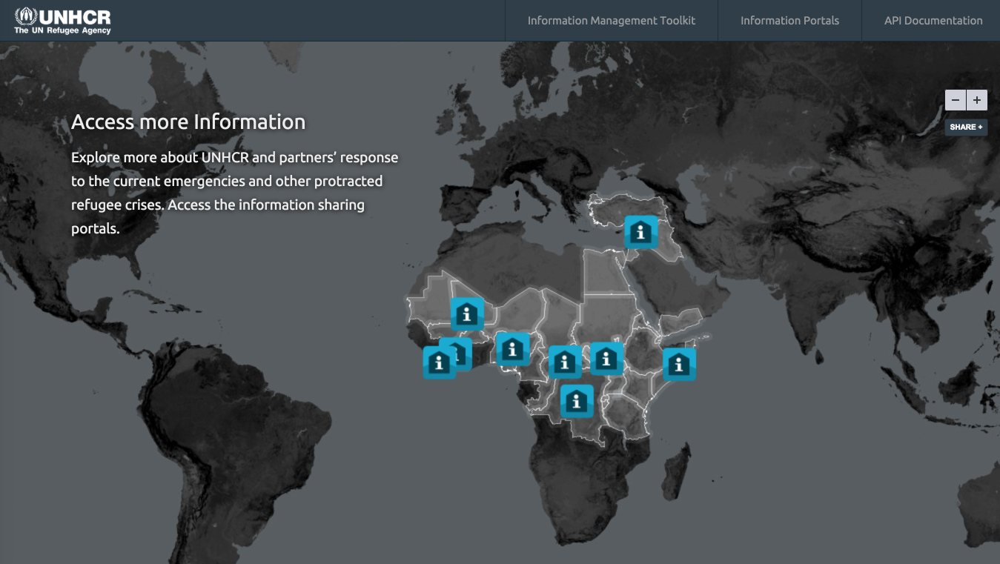

Working with UNHCR, the United Nation’s Refugee Agency, we helped launched a new iteration of data.unhcr.org, along with a significant redesign to its information sharing portals. Providing open data has become a critical tool in UNHCR’s response to refugee crises. With 1 million refugees now in Syria, the largest current situation, UNHCR is providing data and operations information through data.unhcr.org to improve coordination and the overall on-the-ground response.
This redesign marks the first release of the work we’ve been doing with the UNHCR GIS and data team. Here’s a quick recap of what’s new and a sneak peak at what’s to come.
A new data.unhcr.org
The homepage for data.unhcr.org now features a fullscreen global map showing current active emergencies that UNHCR is responding to along with direct access points to the information sharing portals.

Full screen map showing locations active emergencies and information portal links.
Relaunch and redesign of UNHCR open data portals
Information portals provide a critical access and coordination point for UNHCR and its operational partners, as well as serve as the primary resource for up-to-date data about demographics and operations around a crises. The redesign refreshed critical UI components to improve the experience in accessing and using the portal, and is the first step in improving the way UNHCR shares data with its partners and the public.

A view of the Syria Regional Refugee Response page.
What’s to come
Last week’s launch of the improved homepage and rebranding of information portals is just the beginning of the work UNHCR has planned. Here’s what else is in the works.
1. Improved situation map on portal pages
The situation map provides much needed geographical context into an emergency. Key demographic data and operational data can be shown as an overview to the situation and provide quick access to the data. In addition to a redesign of the map, more data layers will be available to browse including demographic data at the camp and regional level, along with operational data showing relief activities and critical infrastructure data.
2. Custom embeds of situation map
The situation map will have custom embed options to quickly integrate its data outside of the information portal. These embeds will give anyone the ability to quickly integrate current maps and data into their own site, news articles, or blog posts.
3. New layers on data.unhcr.org
The landing page for data.unhcr.org will be updated with new layers outlining current global data and activities. These new layers will provide an initial understanding of where and how UNHCR is responding to refugee crises around the world and serve as a portal to global information about humanitarian crises.
4. Data API
Demographic and operational datasets will be available for download and as JSON & GeoJSON endpoints in a fully built out API. The same data that powers the maps will be fully available for integration into an application or visualization. This furthers the ability to provide coordination with direct access to data.
It’s been awesome working with the UNHCR team and helping them improve a critical resource in emergency operations. To learn more or donate to the work UNHCR is doing in Syria and around the world, visit donate.unhcr.org.